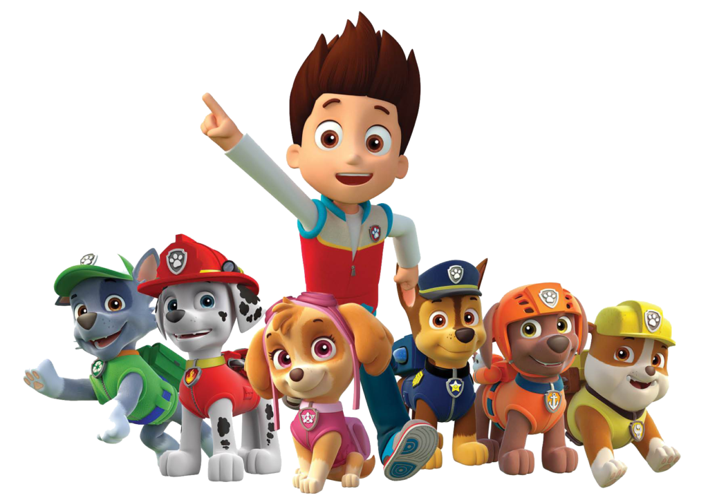

Nenhum trabalho é grande demais para a nossa equipe
Conheça a Equipe da Patrulha Canina.
A Patrulha Canina é uma equipe de filhotes liderada por Ryder. Juntos, eles ajudam os moradores e protegem Adventure Bay em diversas missões
Nenhum trabalho é grande demais para a nossa equipe
A Patrulha Canina é uma equipe de filhotes liderada por Ryder. Juntos, eles ajudam os moradores e protegem Adventure Bay em diversas missões

Bem-vindo!!!
Cada filhote possui uma função diferente, com equipamentos e veículos próprios para ajudar nas missões.
A Patrulha Canina é formada por filhotes com diferentes personalidades, habilidades e funções. Juntos, eles trabalham em equipe para ajudar quem precisa.
Cada integrante possui equipamentos, veículos e habilidades próprias. Por exemplo, Chase atua na polícia, Marshall ajuda em emergências e Skye realiza missões pelo ar.
Liderados por Ryder, os filhotes recebem chamados e enfrentam diferentes desafios em Adventure Bay. Eles usam trabalho em equipe, coragem e criatividade para resolver os problemas.
|
Baixar Guia da ↓